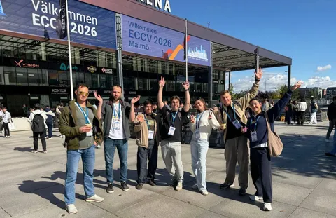
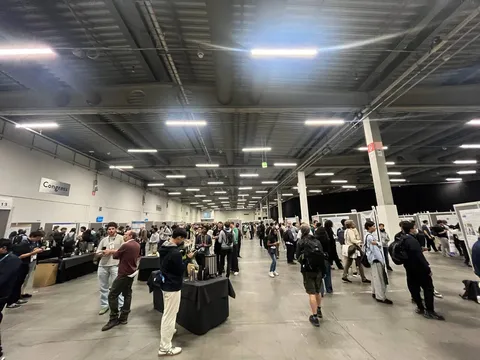
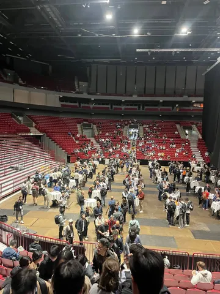

С 8 по 12 сентября в Мальмё проходит 19-я European Conference on Computer Vision — одна из крупнейших конференций по компьютерному зрению. Сегодня рассказываем о статьях исследователей Яндекса, принятых на конференцию в основной трек и на воркшопы.
Revisiting Autoregressive Models for Generative Image Classification
Над статьёй работали исследователи Yandex Research Илья Судаков, Артём Бабенко и Дмитрий Баранчук.
Авторы пересматривают потенциал авторегрессионных моделей в классификации изображений. Метод на основе RandAR оценивает изображение при разных случайных порядках визуальных токенов и агрегирует результаты. Это снижает зависимость от конкретного порядка и помогает модели учитывать разные области и свойства объекта.
В экспериментах метод превосходит диффузионные и предыдущие AR-классификаторы по точности и устойчивости к сдвигам распределения данных. При этом он работает до 25 раз быстрее диффузионных классификаторов. По качеству метод сопоставим с передовыми дискриминативными моделями — заметное достижение для генеративных классификаторов. Код авторы выложили на GitHub.
DuET: Dual Expert Trajectories for Diffusion Image Editing
Над статьёй работали исследователи Yandex Research Лидия Троешестова и Сергей Кастрюлин, а также Александр Устюжанин из Alice AI ART.
DuET — training-free-метод улучшения качества редактирования в unified-моделях генерации и редактирования картинок. Он основан на интуиции: если мы учим одну модель делать и генерацию, и редактирование, то и на инференсе можно попробовать использовать оба режима. Оказывается, что в середине генерации можно временно отключить привязку к исходному изображению и перевести модель в режим text-to-image, а затем вернуть её к редактированию. Это позволяет более эффективно использовать генеративные способности модели.
У метода есть адаптивный вариант, который автоматически определяет, для каких правок нужно такое переключение. В результате решение повышает точность и естественность редактирования, уменьшает количество артефактов и при этом сохраняет важные детали исходного изображения.
Revisiting Classifier-Free Guidance Methods in Latent Diffusion Models
Среди авторов — Сергей Кастрюлин из Yandex Research, а также Артём Сергиевский и Артём Туревич из НИУ ВШЭ.
Classifier-Free Guidance — повсеместно используемый метод улучшения качества визуальной генерации в диффузионных моделях. За последние четыре года вышло огромное количество статей, предлагающих улучшение исходного подхода. При этом большинство статей плохо сравниваются с конкурентами, замеряются на неинформативных бенчмарках или проверяют качество на устаревших моделях.
Цель работы — актуализировать понимание о том, где область находится сейчас. Для этого исследователи сравнили восемь методов на основе Classifier-Free Guidance, не требующих дополнительного обучения, на моделях Stable Diffusion 3.5 Medium и FLUX.2 4B Base. Все методы тестировались в одинаковых условиях на задачах композиции объектов, соответствия текстовому запросу, генерации текста и рассуждения на основе знаний.
В статье собраны результаты бенчмарков и примеры генераций, поэтому методы можно сравнить не только по числам, но и визуально. Спойлер: страшные руки тоже присутствуют.
#YaECCV2026
ML Underhood


